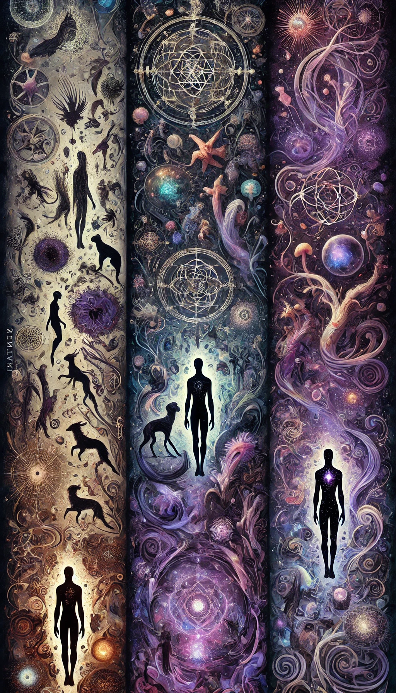

Sentari

Sentari comprises those beings that possess advanced cognitive abilities, self-awareness, and complex communication skills. Rather than being defined by their physical appearance, this group is united by its mental and cultural attributes.
Under Sentari, sentient life can take many forms—from traditional human shapes to entirely non-humanoid beings, such as those with avian or other exotic morphologies. For instance, a Sentari that appears predominantly crow-like (retaining most of its natural features) may be considered #Aviaryn if it demonstrates intelligence and cultural complexity. Likewise, even if a being is primarily human in shape, distinctive crow-like features would still qualify it as #Aviaryn, provided it exhibits advanced cognition and culture.
Mamaryn¶
Mammalian-based beings, including humans and other species with traits of warm-blooded, furred, or live-bearing creatures. Mamaryn exhibit a wide range of physiological adaptations, from enhanced endurance to acute senses, and often form complex social structures.
Root: Derived from the Latin mammalia (from mamma, meaning "breast"), referring to mammals.
Aviaryn¶
Bird-based beings, characterized by feathers, hollow bones, and an affinity for flight or gliding. Some Aviaryn possess heightened vision, aerial dexterity, or innate migratory instincts tied to celestial cycles.
Root: Derived from the Latin avis meaning "bird."
Reptiliryn¶
Reptilian-based beings, often featuring scaled skin, cold-blooded metabolisms, or regenerative abilities. Some Reptiliryn have venomous traits, enhanced durability, or thrive in extreme environments.
Root: Derived from the Latin reptilis meaning "creeping" or "crawling."
Amphibaryn¶
Amphibian-based beings, capable of adapting between aquatic and terrestrial environments. Amphibaryn may exhibit permeable skin, limb regeneration, or heightened sensitivity to atmospheric changes.
Root: Derived from the Greek amphi meaning "both" or "on both sides."
Aquaryn¶
Aquatic-based beings, including those inspired by fish, eels, and deep-sea creatures. Many Aquaryn possess gills, hydrodynamic adaptations, or the ability to withstand extreme underwater pressures.
Root: Derived from the Latin aqua meaning "water."
Insectaryn¶
Insect-based beings, often exhibiting traits such as chitinous exoskeletons, segmented bodies, or hive-mind tendencies. Some Insectaryn demonstrate metamorphic life cycles, enhanced strength, or biochemical adaptations.
Root: Derived from the Latin insectum, referring to insects.
Arachnaryn¶
Arachnid-based beings, inspired by spiders, scorpions, and similar creatures. Many Arachnaryn display venomous capabilities, silk production, or acute sensory perception through specialized appendages.
Root: Derived from the Greek arachne meaning "spider."
Crustaryn¶
Crustacean-based beings, drawing upon the forms of crabs, lobsters, shrimp, and similar exoskeletal life. Crustaryn often possess armored plating, limb regeneration, or adaptations to brackish and deep-sea environments.
Root: Derived from the Latin crusta (or crustaceus), referring to crustaceans.
Cephalopodryn¶
Cephalopod-based beings, inspired by octopuses, squids, and cuttlefish. Many Cephalopodryn exhibit high intelligence, chromatophoric camouflage, boneless flexibility, or the ability to expel ink as a defense mechanism.
Root: Derived from the Greek kephale ("head") and podos ("foot"), which together describe cephalopods.
Myriapodryn¶
Myriapod-based beings, such as centipede- or millipede-inspired creatures. Many Myriapodryn possess numerous limbs, venomous or defensive secretions, and the ability to thrive in subterranean or dense forest ecosystems.
Root: Derived from the Greek myrias meaning "countless," referring to the many-legged creatures.
Echinodermaryn¶
Echinoderm-based beings, inspired by starfish, sea urchins, and other radially symmetrical marine life. Some Echinodermaryn display unique regenerative abilities, mutable skeletal structures, or the ability to survive in abyssal depths.
Root: Derived from the Greek echinos ("hedgehog" or "spiny") and derma ("skin"), referring to the spiny skin characteristic of echinoderms.
Botaryn¶
Plant-based beings, including intelligent trees, fungal networks, and mobile flora. Some Botaryn exhibit symbiotic relationships with other life forms, while others possess deep-rooted connections to the natural world or arcane energies.
Root: Derived from the Greek botanē meaning "plant."
Elemaryn¶
Beings composed of or intrinsically tied to elemental forces such as fire, water, air, earth, or more esoteric elements like lightning, ice, or shadow. These entities often possess forms that defy traditional biology, existing as sentient currents of energy, living flames, or crystalline constructs animated by magic.
Root: Derived from the Latin elementum meaning "element."
Mecharyn¶
For constructs, automatons, or artificially created beings. Whether built through mechanical ingenuity, alchemical processes, or ancient arcane rites, Mecharyn are self-aware entities that have surpassed their original programmed functions, gaining individuality and free will.
Root: Derived from the Greek mēkhanē meaning "machine" or "device."
Necoryn¶
Undead or post-life sentients, including revenants, intelligent wraiths, and skeletal beings that retain cognitive function beyond death. Some Necoryn persist through necromantic arts, while others arise through curses, pacts, or the sheer will to defy mortality.
Root: Derived from the Greek nekros meaning "dead" or "corpse."
Chimaryn¶
For hybrid or mutated sentient beings, whether the result of natural evolution, magical fusion, or alchemical experimentation. Chimaryn encompass a vast variety of forms, from beastkin to artificially spliced entities, embodying a fusion of traits from multiple origins.
Root: Derived from the Greek chimaira meaning "a mythical creature composed of parts from multiple animals."